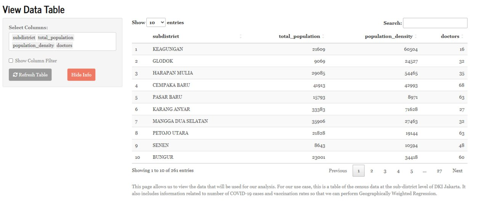
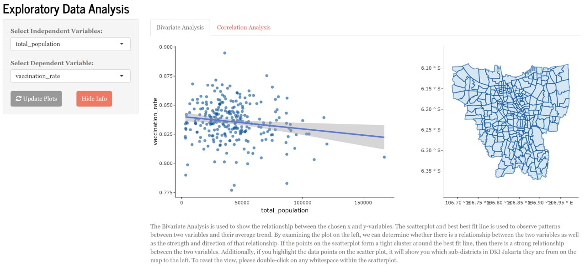
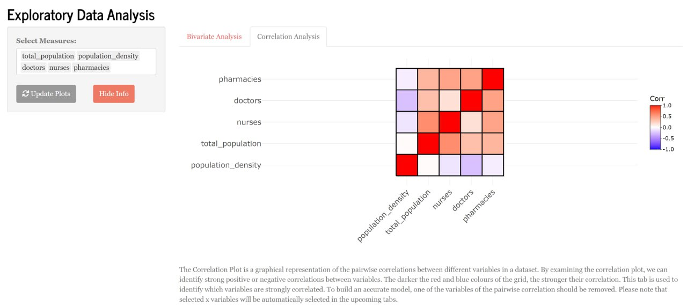
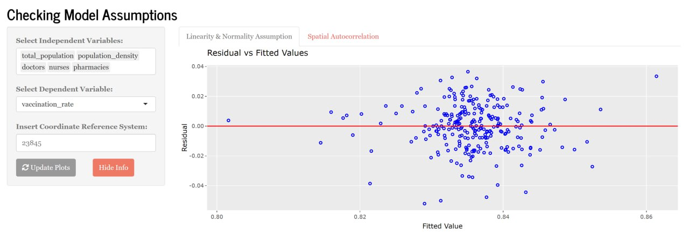
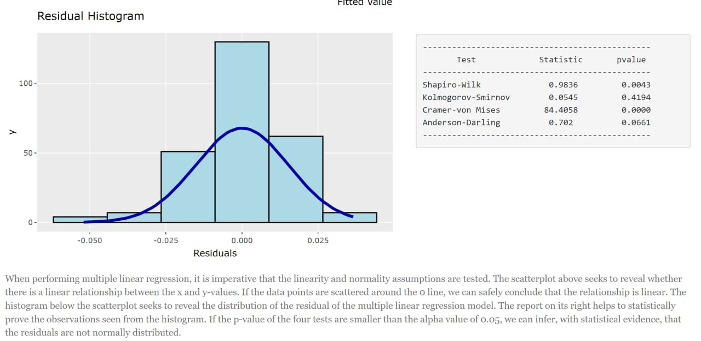
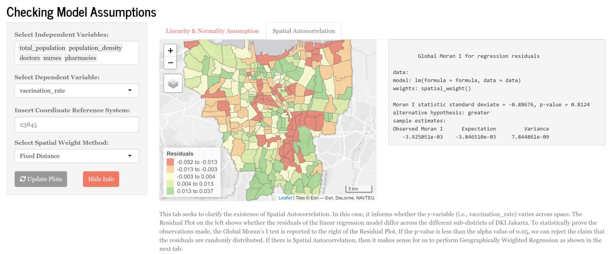
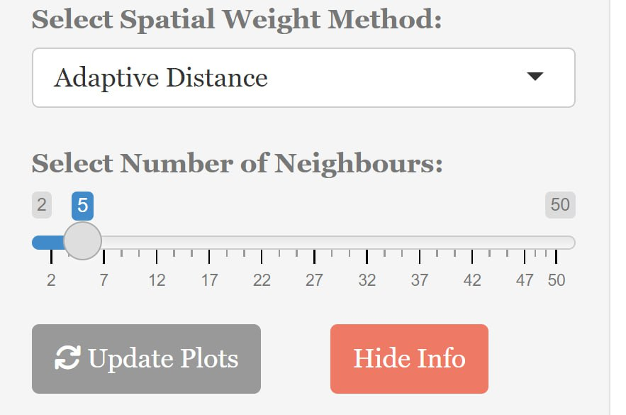
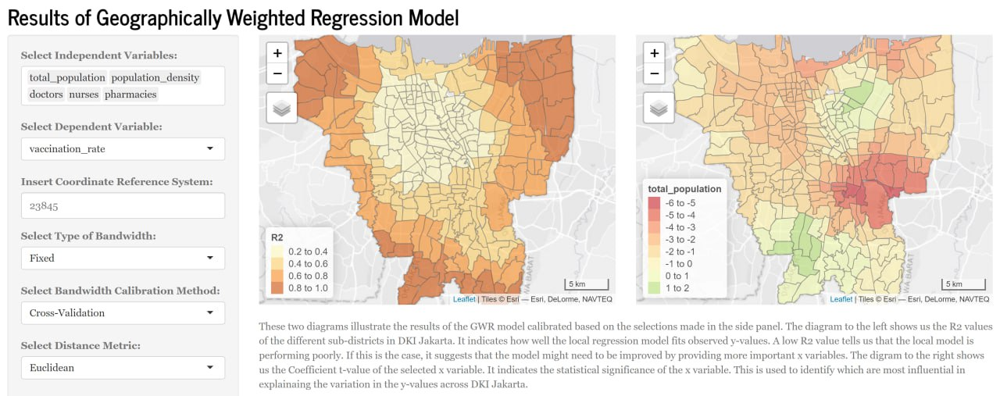

Research Paper
Abstract
Today, significant amounts of land use data is both freely and commercially available for analysis. One such method explored is geographically weighted regression analysis, which considers spatial elements beyond the conventional OLS regression model, which can provide useful insights for businesses, policymakers and individuals. However, complex processes required in data preparation can hinder the effective use of spatial data to make useful conclusions. In an effort to bridge the gap between the high demand and low accessibility of this analytical tool, we aim to build an application that allows users to create geographically weighted regression models without prior technical knowledge.
Introduction
The integration and analysis of location based data, with other types of data to reveal patterns, relationships and trends lies at the heart of the value of geospatial analysis to help decision makers understand complex situations. However, this powerful tool remains underutilised due to complicated processes required to prepare spatial data for analysis. Yet, inclusion of a spatial dimension in conventional analysis can have the potential to unlock key insights in any research project. For instance, including a spatial dimension into the conventional linear regression model considers a more accurate model that accounts for spatial variations and provides decision makers with more nuanced insights into the relationship between variables. This can be a powerful tool to provide localised insights, to identify areas that require targeted interventions. The usefulness of spatial analysis, paired with low levels of utilisation highlights a need to simplify the technical requisite to conduct analysis. This motivates the creation of our project: to allow users to conduct geographical regression analysis through using an application.
Motivation and Objectives
With the aim to allow users to conduct geographically weighted regression analysis easily, we identified key difficulties that users may face in geographical regression analysis. Firstly, in deciding what regression model best fits the dataset, users can be unsure on whether a geographically weighted regression is suitable. Subsequently, users may not be familiar with the packages used in geographic regressions. Building on these difficulties we created the following objectives for our application:
Allow users to upload datasets including a dependent variable, and geographical and non-grographical explanatory variables
To create interactive graph plots for exploration of relationships between regressor variables
Create spatial plots for the fitting of a linear regression to conduct a hypothesis test of spatial autocorrelation within the dataset
Conduct geographically weighted regression and visualise various results in interactive graph plots
Use Cases
We chose to study the spatial variations in vaccination rates of Jarkarta as a use case for our application. Despite the availability of effective vaccines against various infectious diseases, vaccination rates remain low in many parts of the world. The issue of low vaccination rates poses a significant public health concern, as it increases the risk of outbreaks and epidemics, which can lead to serious illness, disability, and even death. The lack of willingness or ability to vaccinate also creates a threat to herd immunity, which is essential for the protection of vulnerable populations, such as infants, elderly people, and those with weakened immune systems. Furthermore, low vaccination rates can cause economic losses due to the cost of healthcare services and the reduction in productivity caused by illness. Therefore, addressing the issue of low vaccination rates is critical for protecting public health and reducing the burden of preventable diseases.
Literature Review
In the review of past literature, we referenced the work of Mallalo and Tatar (2021) in their study Spatial Modeling of COVID-19 Vaccine Hesitancy in the United States, and the study by Mansour et. al (2015) on the Application of geographically-weighted regression analysis to assess risk factors for malaria hotspots in Keur Soce health and demographic surveillance site. The studies were chosen as they use GWR as a primary method in their methodology to investigate outcomes related to health. In our analysis, we focused on examining the methodology employed in the evaluation process of the suitable regression model used.
In both papers, the authors started by using linear regression as a diagnostic tool for selecting predictors for the GWR model. In the Vaccination study, an OLS regression model was fitted as the baseline model, where regressors were selected based on the forward stepwise selection method. These variables were then fitted into a GWR, were an adaptive kernel was used. A multiscale geographically weighted regression was also created as it allows for the estimation of spatially varying coefficients at multiple spatial scales. In evaluating the models created, conventional OLS statistics such as adjusted R^2, RSS, AICc and multicollinearity were compared. Additionally, Moran’s I statistic on model residuals was also examined to determine spatial autocorrelation of variables.
A similar approach was conducted in the study of malaria hotspots in Keur Soce. The figure attached provides a flow chart of processes conducted in formulating the final GWR model.

After understanding the thought process of experts in constructing GWR for analysis, we adopted a similar approach in the design of our application. Further elaboration on the application is provided in the next section.
Design Framework
The DIVAD framework was motivated by a general lack of effective and easy to use web enabled client based geovisual analysis tool for discovering spatiotemporal patterns in massive movement data. To create a user-friendly application, we incorporated elements suggested from the framework.
Firstly, the design of the map view in our EDA page, under bivariate analysis adopts an Overview + Focus view, where broadly, users are able to see a scatter plot of variables they select, and can choose to examine the areas by using the lasso tool to scope data points out from the scatter plot. These selected areas will be highlighted in the map, which seeks to inform the user of any presence of clustering patterns in the results. The map plots created are also highly customisable, where users can customise the model based on selected options.
We also linked the separate tabs together to provide a more user-friendly experience for users. For instance, variables selected in the EDA tab will be preselected for in the Model Assumptions tab. This makes it intuitive for users in the process of building a model, where the progressive testing for different assumptions can be conducted and where the user can slowly eliminate variables that might not conform to the model assumptions.
Demonstration of Application
As mentioned earlier, the application seeks to perform geographically weighted regression to explore vaccination rates within the various sub-districts of DKI Jakarta. To do this, we studied past literature and took inspiration from a study conducted by Mallalo and Tato (2021) for the the overall analysis flow of the application. In addition, we took a lot of pointers from Professor Kam Tin Seong to ensure that the application only included features that were useful for users. Here are the different features and overall flow of our application:
View Data Table
Before performing any analysis, users are shown a data table (Figure 2) that gives them an overview of the data set that will be used in the analyses. This allows the user to see the data that will be used to build the regression models used later. The tabular format makes it easy to understand the data at a glance, which allows for more efficient data integrity checks. Additionally, we have included certain user input features for users to filter out specific values and only view certain columns so that they do not get overwhelmed by the large data set.

While this form of visualisation is useful, it does not provide any valuable insights into underlying patterns and relationships within the data. Such insights are important to take note of when building any regression model. The next few sections helps us with this.
Bivariate Analysis
The Bivariate Analysis is used to show the relationship between the chosen x and y-variables. The scatterplot and best best fit line is used to observe patterns between two variables and their average trend. By examining the plot on the left (Figure 3), we can determine whether there is a relationship between the two variables as well as the strength and direction of that relationship. If the points on the scatterplot form a tight cluster around the best fit line, then there is a strong relationship between the two variables. Additionally, if users highlight the data points on the scatter plot, it will show them which sub-districts in DKI Jakarta they are from on the map to the left. This view helps users identify which sub-districts in DKI Jakarta have a strong linear relationship with reference to the specific x-variable selected.

Examining the strength of the linear relationship between the selected x and y variables can help check the assumptions of the model as well. We will explain more about this in a later section. Additionally, performing bivariate analysis before building the multiple linear regression model ensures that the model is based on solid foundations and is likely to provide accurate predictions.
Correlation Analysis
The Correlation Plot is a graphical representation of the pairwise correlations between different variables in a dataset. By examining the correlation plot, we can identify strong positive or negative correlations between variables. The darker the red and blue colours of the grid (Figure 4), the stronger their correlation. This tab is used to identify which variables are strongly correlated. To build an accurate model, one of the variables of the pairwise correlation should be removed. Please note that selected x variables will be automatically selected in the upcoming tabs.

This step is crucial before performing multiple linear regression as it helps users with:
Multicollinearity Check - checks for multicollinearity within variables. Multicollinearity can lead to inaccurate and unstable regression coefficients which negatively affects the performance of the model.
Variable Selection - by analysing the correlation between each independent variable, users can exclude variables that might worsen the model.
Linearity & Normality Assumption
When performing multiple linear regression, it is imperative that the linearity and normality assumptions are tested. The scatterplot below (Figure 5) seeks to reveal whether there is a linear relationship between the x and y-values. If the data points are scattered around the 0 line, we can safely conclude that the relationship is linear. The histogram (Figure 6) below the scatterplot seeks to reveal the distribution of the residual of the multiple linear regression model. The report on its right helps to statistically prove the observations seen from the histogram. If the p-value of the four tests are smaller than the alpha value of 0.05, we can infer, with statistical evidence, that the residuals are not normally distributed.


So why is it important to check for these assumptions? Well, the linearity assumption requires that the relationship between the dependent and independent variables are linear. If the relationship is non-linear, the model’s results may be inaccurate. Which means a poor fitted model. Similarly, the normality assumption requires that the errors (i.e., residuals) of the multiple linear regression model be normally distributed. This is because if the residuals are not normally distributed, the model’s result may be inaccurate.
Essentially, this view provides a way for users to ensure the variables they have chosen will indeed be useful in generating a good model. Users are free to change the independent variables as they please to calibrate a model that works for them.
Spatial Autocorrelation
From the earlier views, we have seen the different features that the application provides to allow users to choose specific variables so that they can calibrate a multiple linear regression model that works for them. What we have not seen, however, is how this relates to geographically weighted regression. Hence, we included a feature that allows users to easily visualise why in certain cases (such as this one) a simple multiple linear regression just will not work.
This tab seeks to clarify the existence of Spatial Autocorrelation. In this case, it informs whether the y-variable (i.e., vaccination_rate) varies across space. The Residual Plot (Figure 7) on the left shows whether the residuals of the linear regression model differ across the different sub-districts of DKI Jakarta. To statistically prove the observations made, the Global Moran’s I test is reported to the right of the Residual Plot. If the p-value is less than the alpha value of 0.05, we can reject the claim that the residuals are randomly distributed. If there is Spatial Autocorrelation, then it makes sense for us to perform Geographically Weighted Regression as shown in the next tab (Figure 8).

To provide some users with some flexibility on the calculation of the Global Moran’s I, we have included both Fixed and Adaptive distance measures to calculate the Spatial Weights. Users can choose the number of neighbours they would like to use (Figure 8) should they decide to use the Adaptive distance measure.

Geographically Weighted Regression Results
With all that, the user is finally ready to use all of his/her findings to calibrate a geographically weighted regression model that’s suitable for them. This next section allows users to calibrate the model and view the results in a single view. We have included many user inputs so that users can customise their model in whatever way they want. For instance, we included all five kernel methods that `gwr.basic()` had to offer.
While the results of a geographically weighted model can be visualised in many ways, we decided to only include the R2 Plot and the Coefficient t-value Plot as they explain the results of the model the best with little explanation needed.

Figure 9 shows two diagrams that illustrate the results of the GWR model calibrated based on the selections made in the side panel. The diagram to the left shows us the R2 values of the different sub-districts in DKI Jakarta. It indicates how well the local regression model fits observed y-values. A low R2 value tells us that the local model is performing poorly. If this is the case, it suggests that the model might need to be improved by providing more important x variables. The diagram to the right shows us the Coefficient t-value of the selected x variable. It indicates the statistical significance of the x variable. This is used to identify which are most influential in explainaing the variation in the y-values across DKI Jakarta.
That concludes the user journey of our application.
Discussions
With the implementation of Geographically Weighted Regression (GWR) for Vaccination Rates in Jakarta, the audience will be able to learn the following pointers:
Spatial Variability of Vaccination Rates
Geographically Weighted Regression (GWR) can provide valuable insights into how vaccination rates vary across different locations in Jakarta. It has the ability to detect areas with higher or lower vaccination rates, identify hotspots or clusters of high or low vaccination rates, and highlight regions where vaccination rates deviate from the overall trend. This information can be useful in identifying areas that may require targeted interventions or allocation of resources to improve vaccination coverage and ensure that vaccination efforts are tailored to the specific needs of different locations in Jakarta.
Local Factors Affecting Vaccination Rates
GWR allows for the identification of local factors that may be influencing vaccination rates. It can help uncover spatially varying relationships between vaccination rates and factors such as socio-demographic characteristics, healthcare access, cultural or even social factors. This can provide a deeper understanding of the drivers of vaccination rates in Jakarta and inform strategies for improving vaccination coverage in specific areas.
Spatial Patterns of Vaccination Inequity
GWR can reveal if there are spatial patterns of vaccination inequity, such as areas with disparities in vaccination rates based on socioeconomic status, ethnicity, or other factors like healthcare access. This can help highlight areas where there may be barriers to vaccination access.
On a National Scale
Based on the findings from our GWR analysis, our project could generate recommendations for policy makers, healthcare providers, and other stakeholders involved in vaccination efforts in Jakarta. These recommendations could include targeted interventions, resource allocation strategies, and policy adjustments to improve vaccination rates and reduce disparities across different areas of Jakarta.
Future Work
While our application will provide the foundation for interested users to create Geographically weighted regressions with a pre-defined dataset, some improvements that we would have liked to incorporate into our application if we had more time and resources include the following:
Allowing users to input their own cleaned dataset into our application
Adapting more functions: MGWR, predictive GWR for more diverse uses
Further optimize server side rendering as currently, our application’s bivariate analysis feature is taking quite a while to render out the plots
Integration with other front end technologies such as react or even vue.js for enhanced front-end capabilities.
Integration with backend technologies for seamless data integration.
Enabling more independent variables for further analysis.